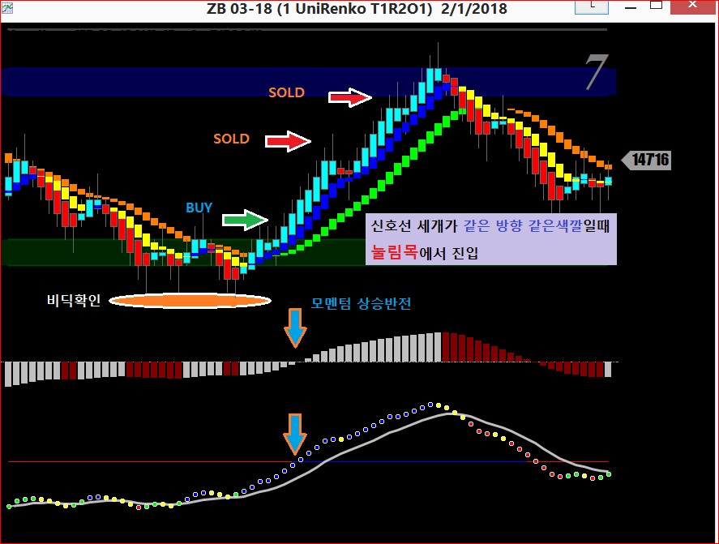
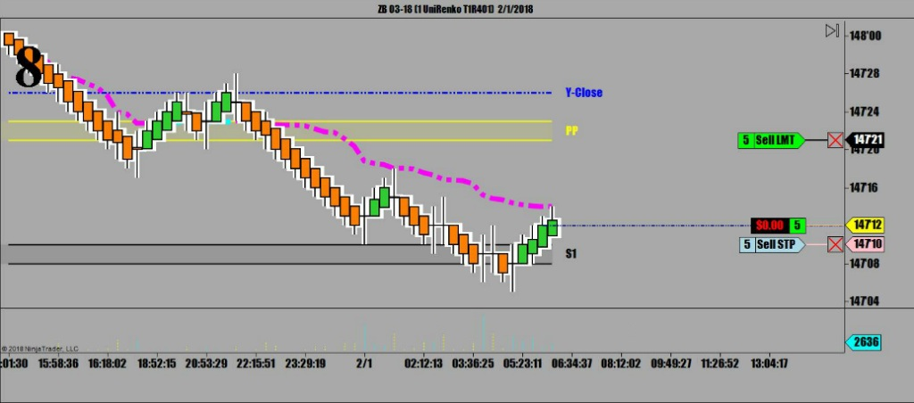
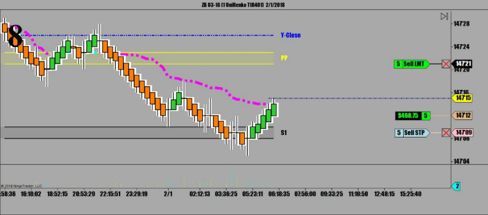
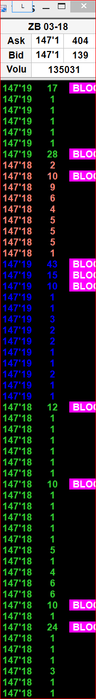
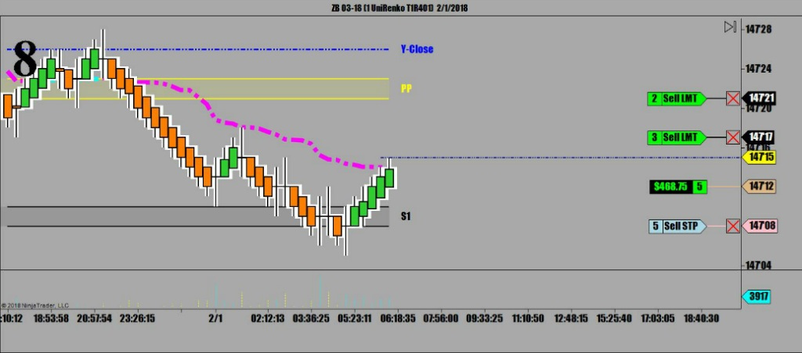
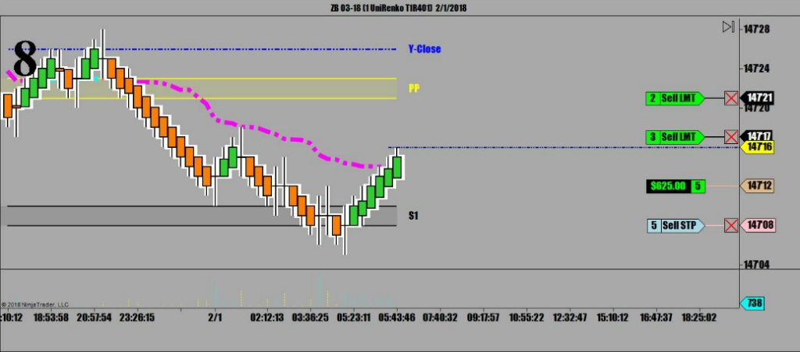
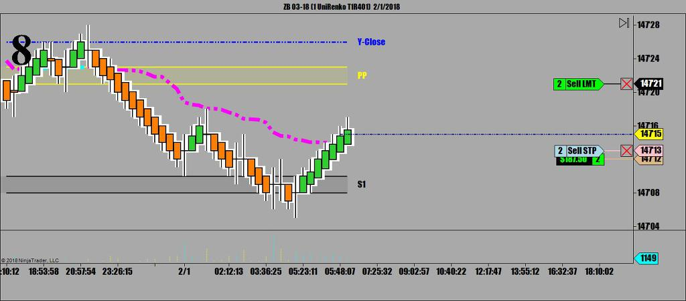
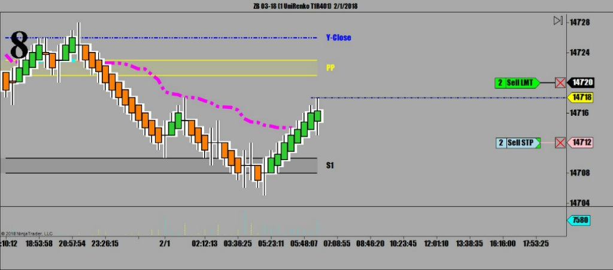
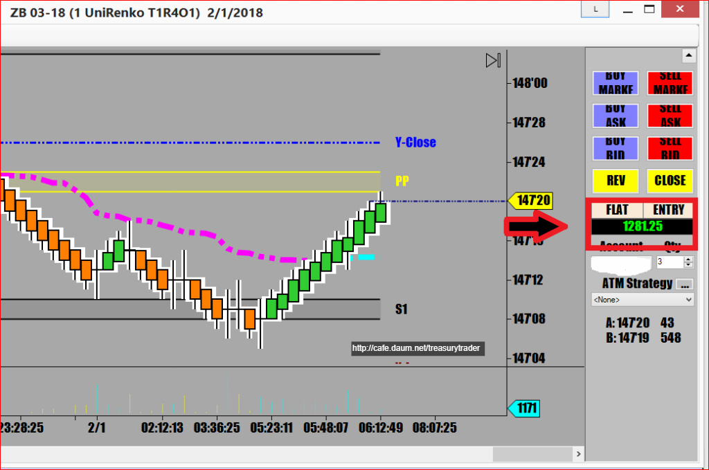

오늘도 채권시장은 국채이자율의 연이은 상승으로 인해 자신만의 하락추세를 이어가고 있는 상황.
이런 하락장세에 추세와 반대로 LONG SIDE의 역매매를 할 경우 적게먹고 빠져야 함



목표가는 항상 다음번 피봇저항선이지만
역매매인지라 적폐세력의 저항이 중간에 만만치 않아
안전운행을 위해 두 번에 나눠 분할 매도시도
갑자기 분할매도로 바꾼 이유는
Time & sales 상에 갑자기 뭉터기 블락 오더들이 거래되기 시작한 것 때문임

경험상 ...중요한 지지(저항)이 아닌 곳에서 갑자기
거래량이 폭등하는데 주가는 전혀 안움직이면
기관들의 손바꿈(오재미)이 일어나고 있다고 봐야 함.. Warning sign !!
[결국 이번 매매의 끝 지점인 피봇 저항선에서 갑자기 방향을 바꾸더니만 하루종일 떡락 함]
 2_1_2018.jpg)
20년 넘게 미국증권사 선물매매팀에서 근무했기에 이런거보면 금방 뭔일인지 알 수 있음
Anyway...
그렇게 나눠놓고 기다리니
결국 피봇에서 피봇으로 P2P 원칙대로 오늘의 메인피봇까지 직진..


일차매도 체결 후 즉시 손절주문을 앞쪽으로 전진배치 (1차 익절에서 나온 수익보존을 위해)



오늘 1차매매 수익은 $1,281.25
오늘 장이 심상치않아 몇번 더 매매할 예정임
오늘 1차매매 3줄 요약
오늘저점에서 3바닥을 만들면서 반등에 성공
매매신호선 위로 올라탄 후 일차 눌림목 반등에서 진입
모멘텀지표들 상승으로 반등 확인 후 매수로 진입